PÉCS · URÁNVÁROS
Világos terek.
Új lehetőségek.
Egy két külön szobás, erkélyes lakás Pécsen, amelyet a hirdetés szerint 2026-ban újítottak fel.
A fotók MI-vel retusáltak. A bútorozási példák illusztrációk.
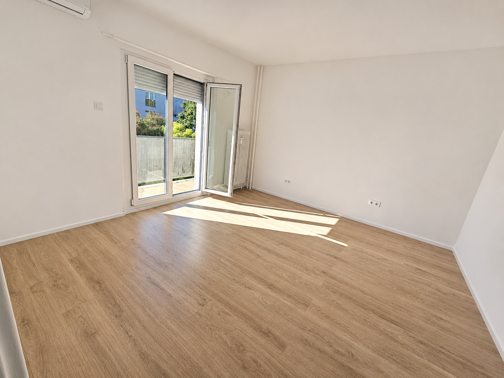
01 / A KÉPEKEN
Fény, anyagok,
részletek.
A hirdetés képein a világos burkolatok, az új konyha és az erkély rajzolnak ki egy rendezett otthont. Minden itt látható kép digitálisan retusált.
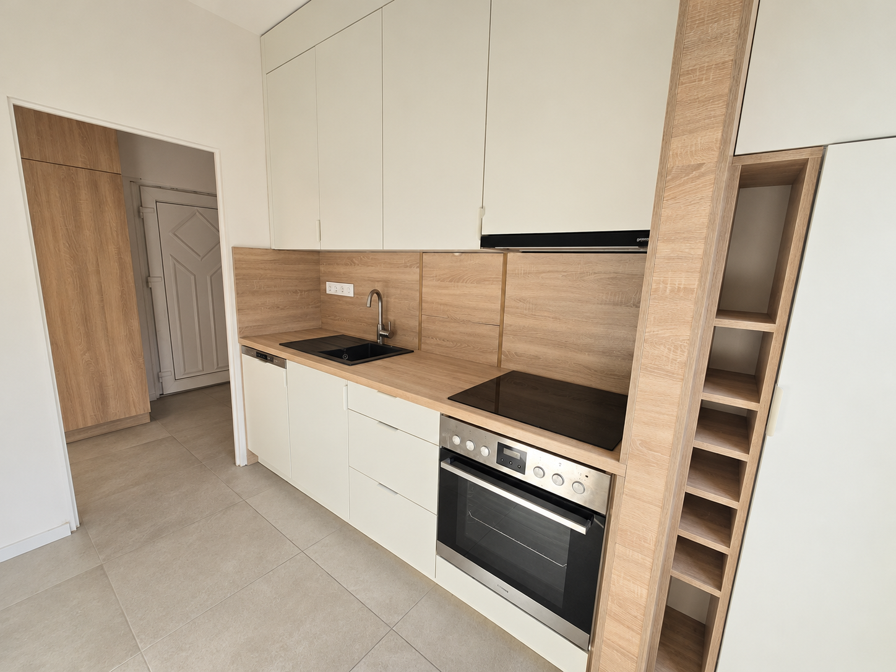
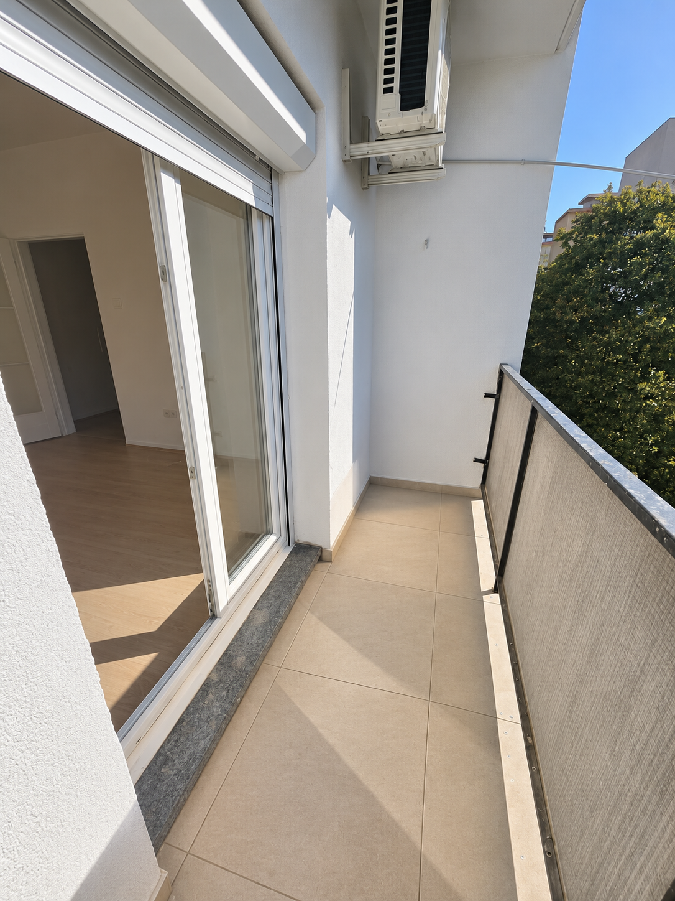
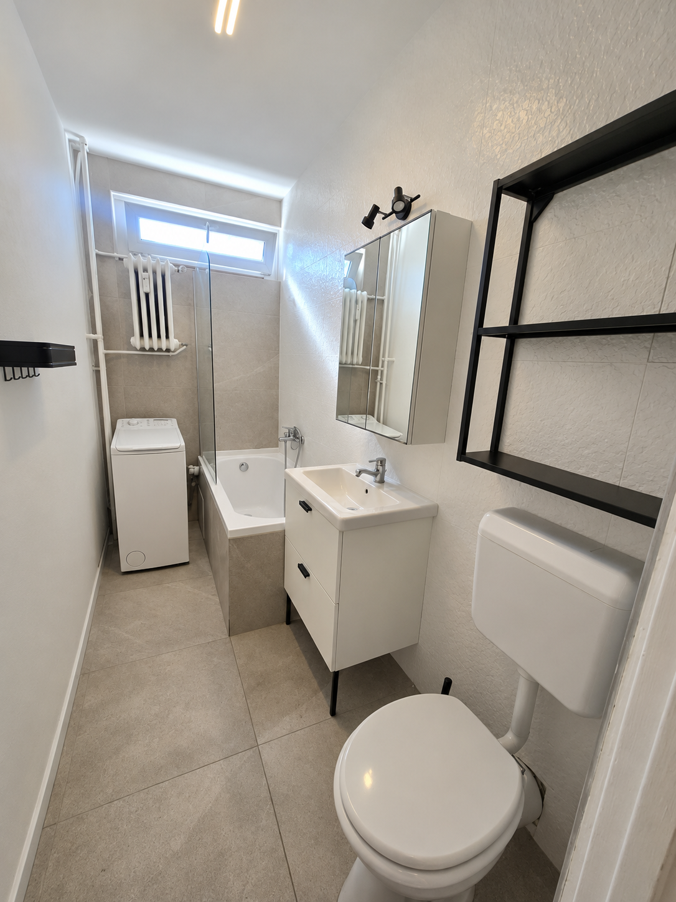
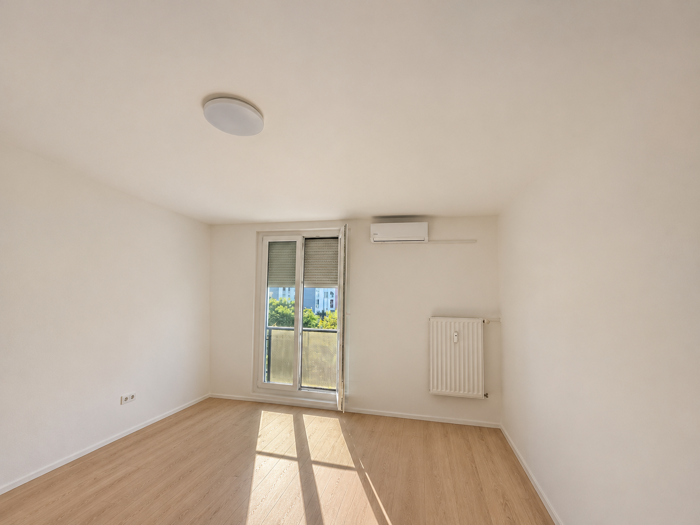
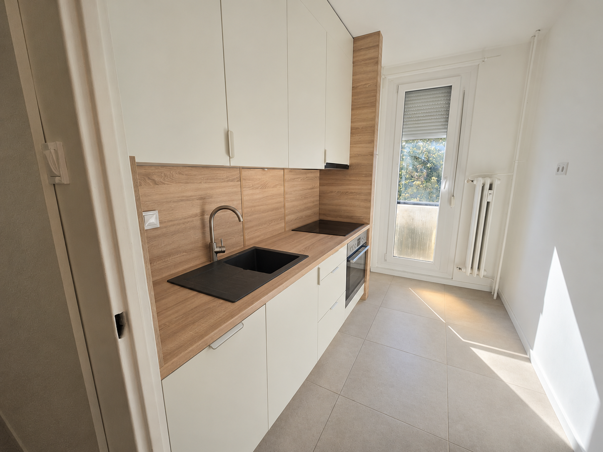
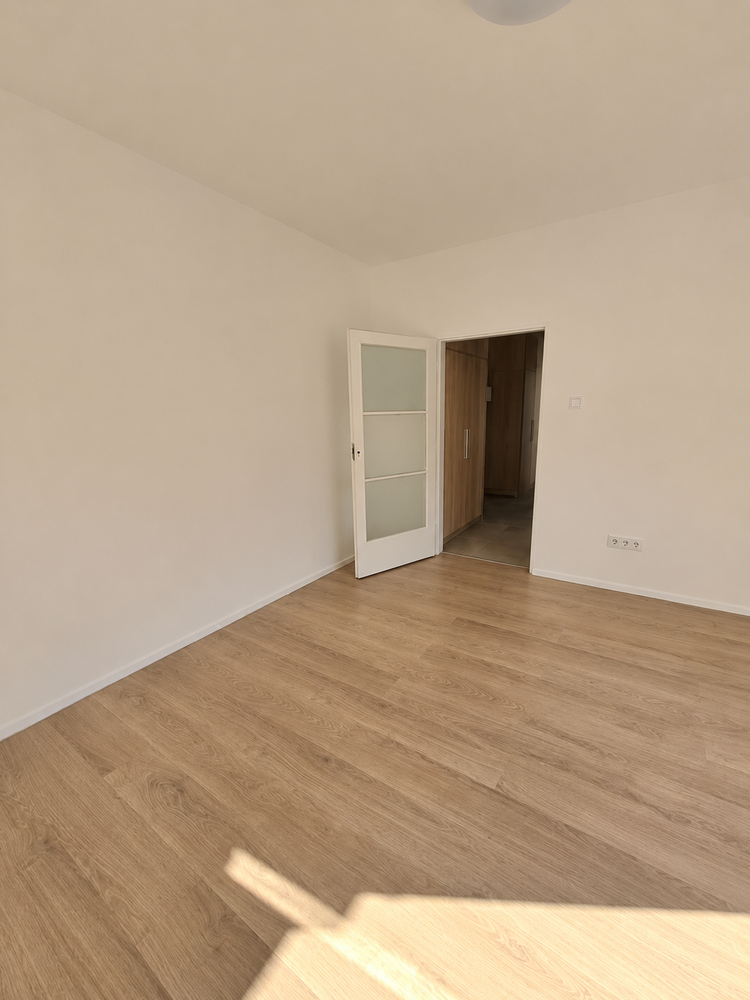
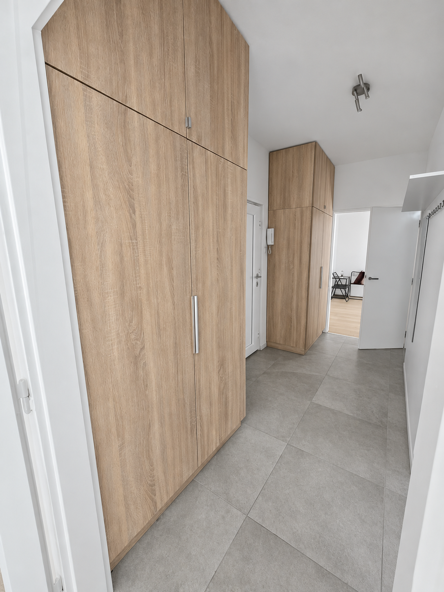
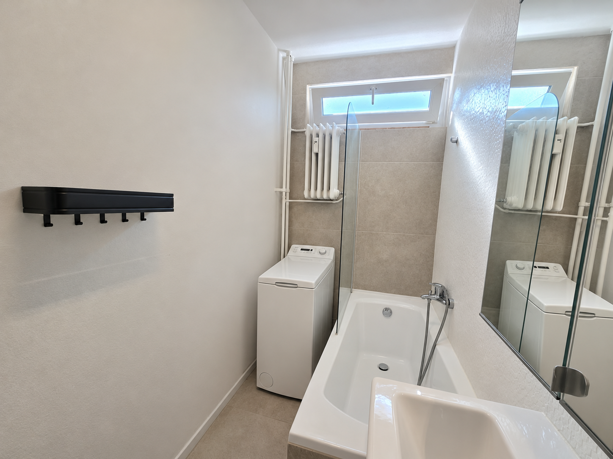
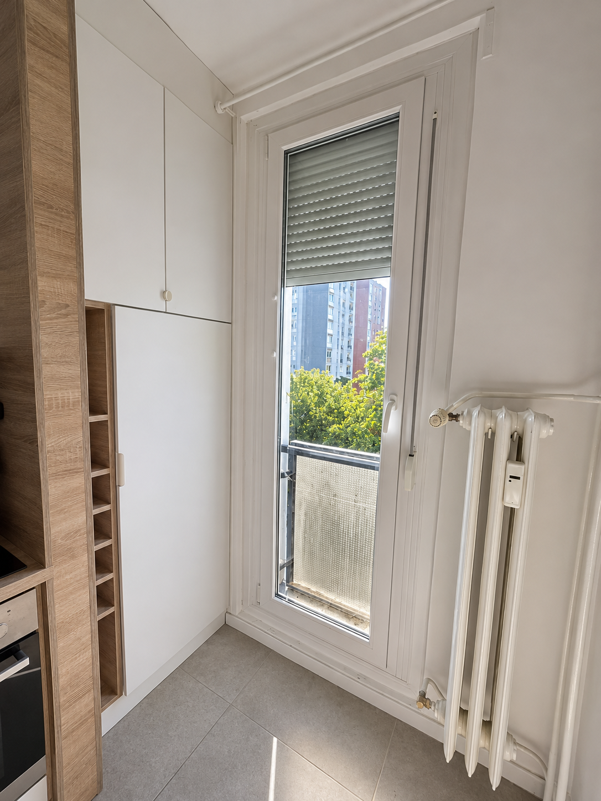
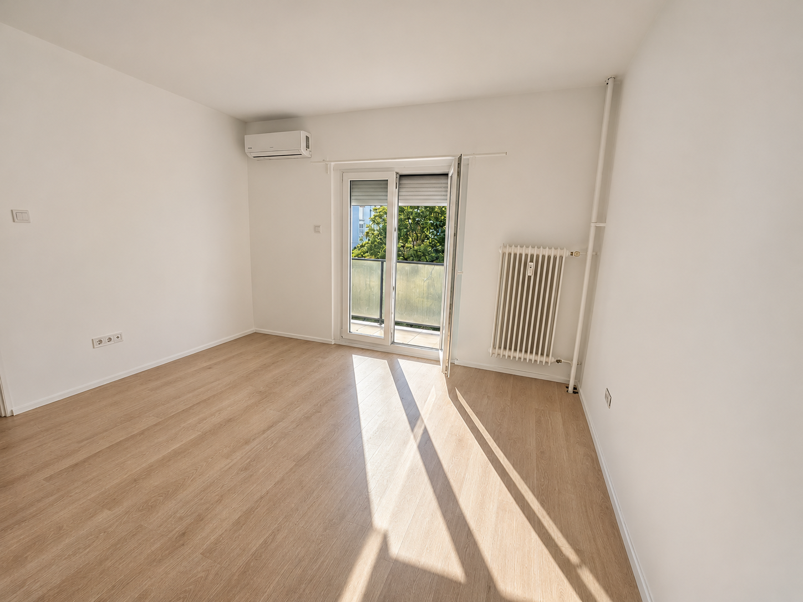
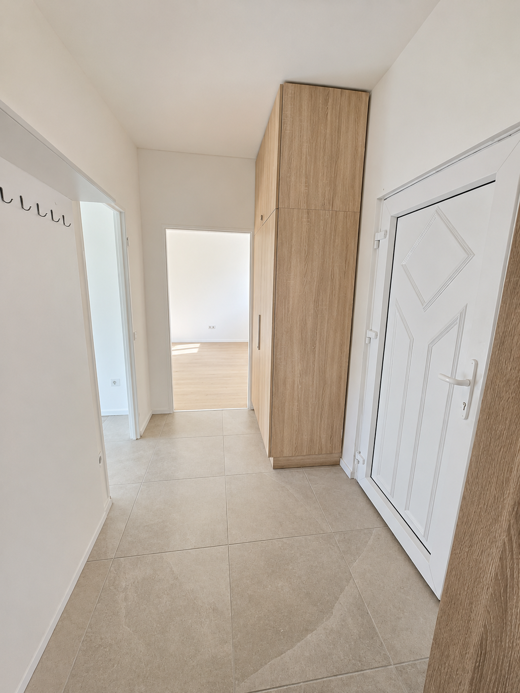
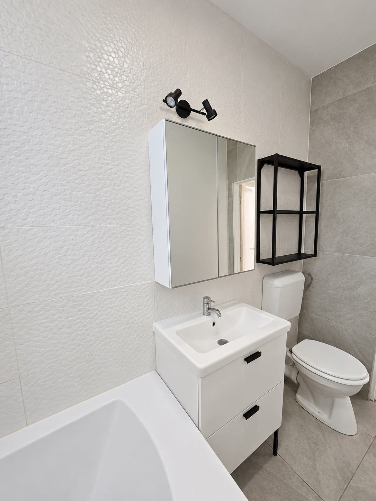
02 / TÉRBELI NÉZET
Válts
nézőpontot.
Forgasd el a szemléltető modellt, válassz helyiséget, rejtsd el a falakat, vagy próbálj ki egy berendezési ötletet.
Szemléltető térmodell · nem hiteles felmérés
A modell betöltése…
A térmodell a fotók és az alaprajz alapján készült szemléltetés; a méretek, egyes térkapcsolatok és a második szoba klímájának helye becsültek. Falak nélkül a szomszédos helyiségek részletei is láthatók lehetnek.
Szerkeszthető Blender-modell letöltése ↓ A szerkesztéshez Blender szükséges. A modell szemléltető, nem felmérés.
03 / BERENDEZÉSI ÖTLETEK
Mi lenne,
ha berendeznénk?
Két egyszerű ötlet a még üres terekhez. A bútorok nem részei az eladásnak, és csak a megjelölt termékek részösszegét mutatjuk.
A szobák méretei nem ismertek. A bútorok tényleges elférését és a közlekedést helyszíni mérés alapján ellenőrizni kell.
Válassz egy berendezési ötletet a termékek megtekintéséhez.
Világos nappali
- KLIPPAN 2 személyes kanapé, Vissle szürke180 × 88 cm · IKEA Magyarország94 990 FtTermék megtekintése
- LACK dohányzóasztal, fehér90 × 55 cm · IKEA Magyarország8 990 FtTermék megtekintése
- KALLAX polcos elem, fehér76,5 × 39 cm · IKEA Magyarország15 990 FtTermék megtekintése
A három termék részösszege 119 970 Ft
Háló és dolgozó
- TARVA ágykeret, fenyő, 140x200 cm148 × 209 cm · IKEA Magyarország44 990 FtTermék megtekintése
- MICKE íróasztal, fehér105 × 50 cm · IKEA Magyarország39 990 FtTermék megtekintése
- FLINTAN irodai szék, bézs71 × 71 cm · IKEA Magyarország24 990 FtTermék megtekintése
A három termék részösszege 109 970 Ft
Az ágyrácsot, a matracot és az ágyneműt az ágykeret ára nem tartalmazza.
Irányadó termékárak: 2026. november 5. A készletet, a szállítás és összeszerelés díját a kereskedőnél kell ellenőrizni. A 3D-ben látható bútorok digitális ötletek; a megadott termékekhez hasonló megoldásokat szemléltetnek.
04 / MOZGÁSBAN
3D-film.
A terek mozgásban.
A térmodell alapján készült rövid film segít áttekinteni a helyiségeket. A modell szemléltető, nem helyszíni felmérés.
A film szemléltető 3D-modell, nem felmérés. A másik szoba részletei nem igazoltak, a klíma helye becsült. A fürdő és a konyha széles látószögű nézete torzíthatja az arányokat.
A TEREK KAPCSOLATA
Helyiségek
egymás mellett.
Saját készítésű, tájékoztató kapcsolati ábra a rendelkezésre álló alaprajz alapján. Nem méretarányos és nem helyszíni felmérés; a konyhaablak és egyes részletek a források között eltérhetnek.
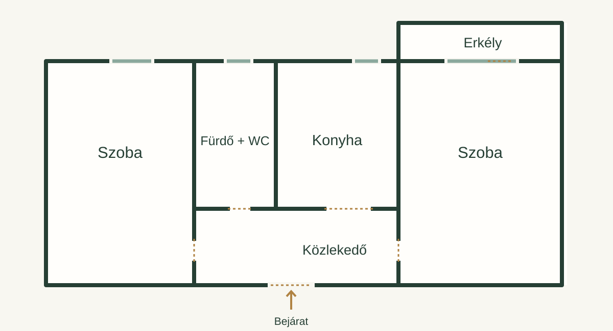
FOTÓFILM
A lakás képei
mozgásban.
Retusált fotókból összeállított bemutató. A felvételek digitálisan módosítottak; a szobák egyes kapcsolatai nem igazoltak.
Átlátható bemutató.
A hirdetés szerint a lakást 2026-ban újították fel, mindkét szobához klíma, az ingatlanhoz tároló tartozik. A fotók digitálisan módosítottak. A 18-as képen látható szoba pontos alaprajzi hozzárendelése nem igazolt. Az alaprajz tájékoztató jellegű, méreteket nem tartalmaz. Az ár és elérhetőség változhat.